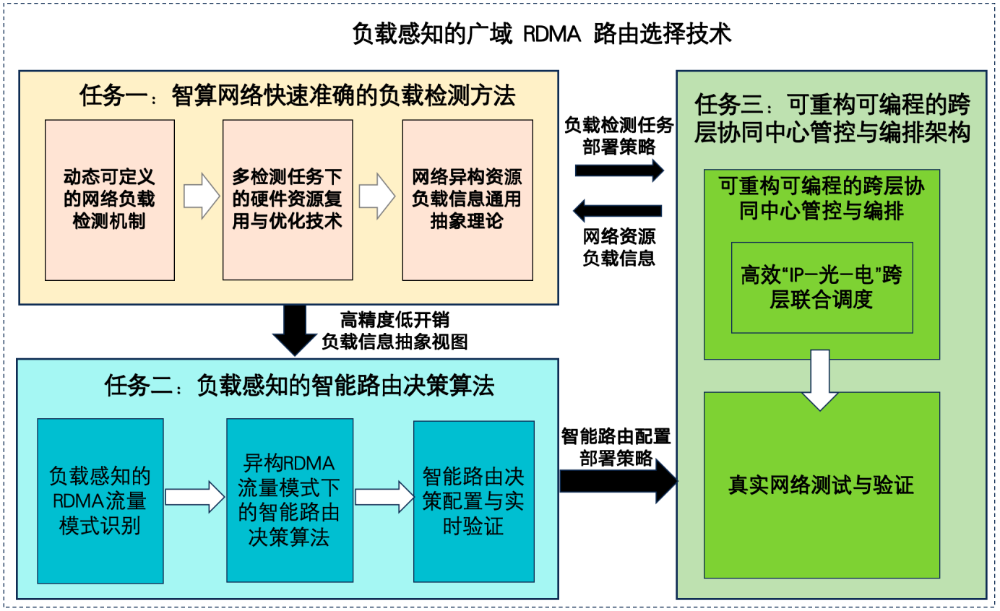

国家重点研发计划 · 青年科学家项目
负载感知的广域 RDMA 路由选择技术研究
01
研究背景
BACKGROUND面向未来智算网络应用对超高吞吐、超低时延广域传输的需求，针对传统 RDMA 网络面临难以高效广域传输的挑战，并且存在负载均衡能力不足、拥塞时性能急剧下降、流量调度较少考虑应用流量模式、难以应对突发流量等难题。本项目聚焦广域 RDMA 网络，着重研究负载感知的广域 RDMA 路由选择技术，支持快速准确的负载检测方法和负载感知的路由决策算法，在多种流量模式下提高广域 RDMA 网络整体吞吐率，减少流完成时间和尾延时。
02
研究目标与关键科学问题
OBJECTIVES本项目聚焦广域 RDMA 网络，着重研究负载感知的广域 RDMA 路由选择技术，支持快速准确的负载检测方法和负载感知的路由决策算法，在多种流量模式下提高广域 RDMA 网络整体吞吐率，减少流完成时间和尾延时。
本项目拟解决两个关键科学问题：1. 广域 RDMA 网络负载快速高精度感知与抽象；2. 异构 RDMA 流量模式下的路由性能提升。研究面向广域 RDMA 多种流量模式的差异路由决策方法，提高网络整体吞吐率、减少流完成时间和尾延时。
拟解决三项关键技术问题：1. 硬件资源复用的网络负载检测任务动态快速部署。2. 路由决策算法的高效部署与实时验证。3. 广域智算传输网络跨层协同调度与现网验证。
03
研究内容
RESEARCH CONTENT围绕上述关键问题，开展三方面研究：
-
快速准确的负载检测方法；
-
负载感知的路由决策算法；
-
跨层协同的广域智算网络传输系统与现网验证。
04
技术路线
APPROACH主要包括以下技术路线：
-
研究动态可定义的网络负载检测机制，设计通用检测算子集合，实现网络负载检测任务的即时部署；研究多检测任务下的硬件资源复用与优化技术，最大化并发负载检测任务数量；研究网络异构资源负载信息通用抽象理论，对负载信息进行无损抽象，为路由决策系统提供负载信息抽象视图；
-
研究负载感知的 RDMA 流量模式识别技术，构建全局网络流量模式分类表，为智能路径选择提供决策依据；研究在不同类型 RDMA 流量模式下的智能路由决策机制，设计负载感知的路由选择算法，为异构 RDMA 流量提供确定性保障；研究智能路由决策的配置和部署技术，持续反馈优化路由决策；
-
基于软件定义的广域智算网络光传输架构，为大规模广域智算网络提供可重构、可编程的传输底座；研究“IP-光”跨层协作机制，构建融合 IP 层与光层节点的多层拓扑结构，保障负载感知路由决策的确定性传输；基于联通实际网络，面向测试流量和现网流量实现全域跨三地以上、距离大于 2000km 广域智算网络传输增强系统。

05
预期成果
EXPECTED OUTCOMES本项目拟构建广域RDMA路由试验系统1个，预期成果包括：快速准确的负载检测方法1个；负载感知的路由决策方案1套；发表高水平论文8篇；申请专利10项。
在广域网场景和不少于三种典型应用的流量模式下，平均流完成时间相比PFC减少 50%以上，尾部流完成时间相比 PFC 减少 60%以上；网络吞吐率提高 50%以上；实现全域跨三地以上、距离大于 2000km 的负载均衡，丢包率在 5%以内。
06
项目进度
MILESTONES横向滑动查看更多进度